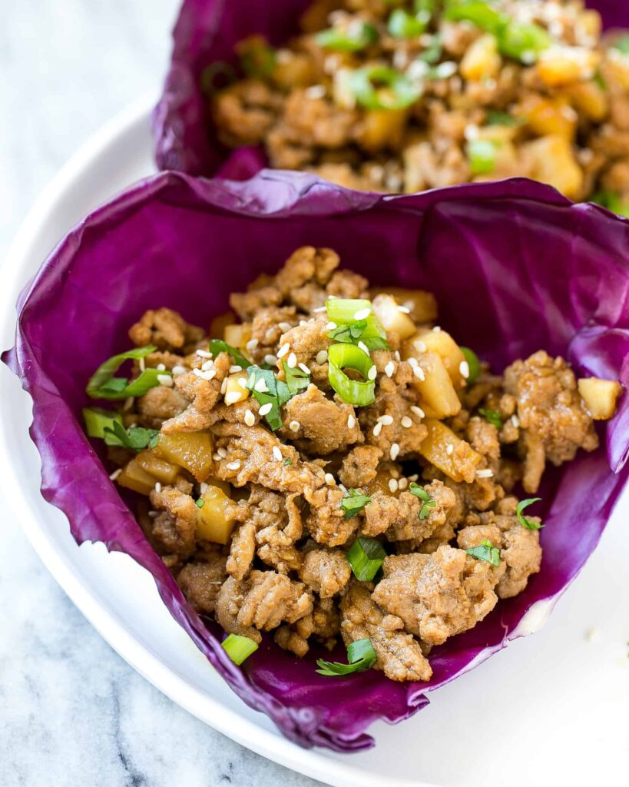

Asian Ground Chicken

Description
Some would describe this meal as being heavenly!
The way the juices and chicken mix together,
it seriously doesn’t get much better than this.
The next time you’re looking for something quick to make for dinner,
make this Asian Chicken recipe and skip the carryout!
Get the whole family to love Asian food and you don’t even have to
leave your comfortable house to get it.
Ingredients
- Ground chicken
- Peanut oil
- Garlic
- Onion
- Sliced green onions
- Sauces: Hoisin and Soy sauce
- Water chestnuts
- Cabbage leaves
- Salt and pepper
- Sesame Seeds
Steps
- Prep the pan: Heat some oil in a pan over medium heat.
- Cook the chicken: In a pan cook, the chicken adds onions,
and season with salt and pepper.
Then mix in garlic, and ginger,
cook for 30 seconds then stir in the soy and hoisin sauces.
Finally, add the chestnuts and cook for a further 1 min.
- Make the cups: Spoon the filling into the cabbage leaves,
season and garnish